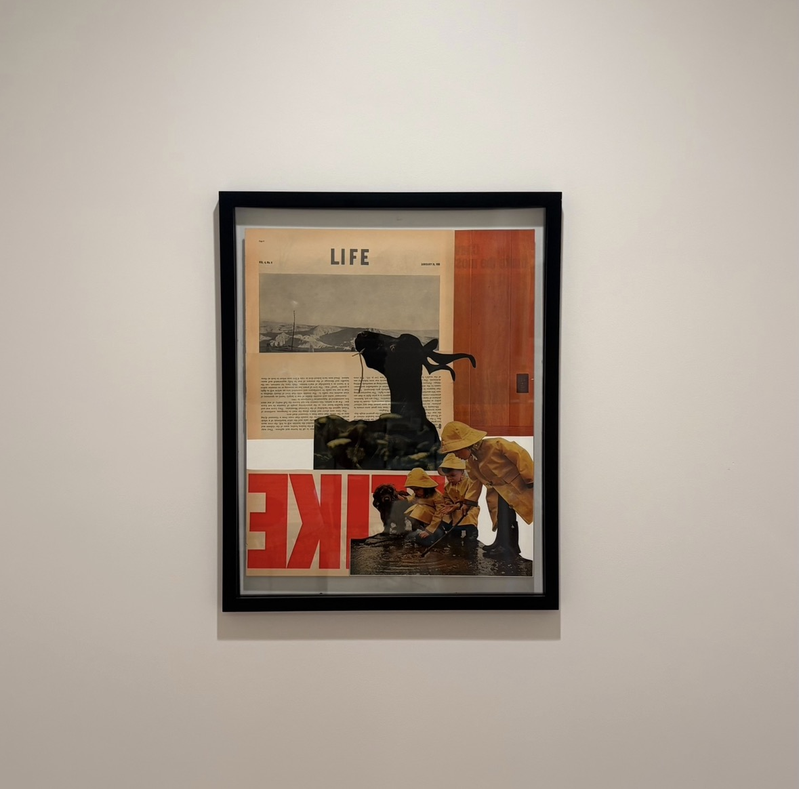
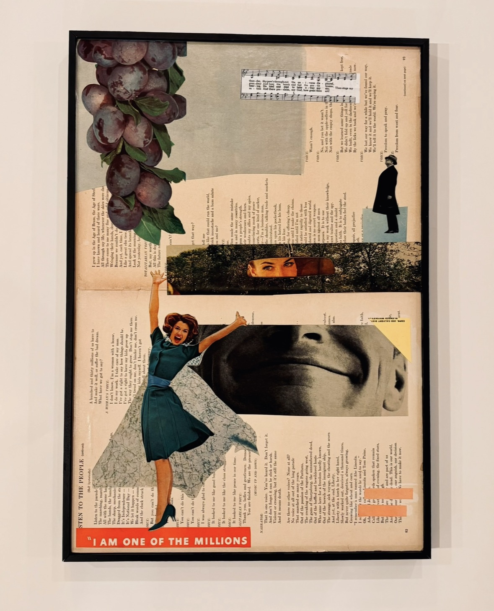
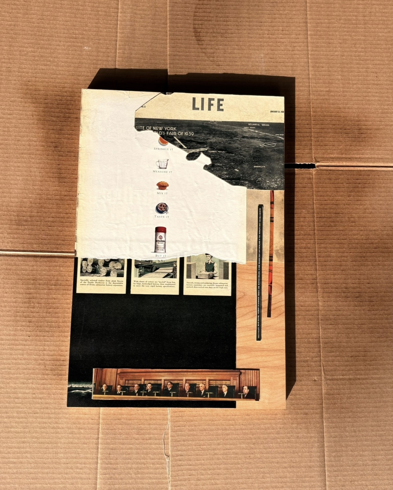
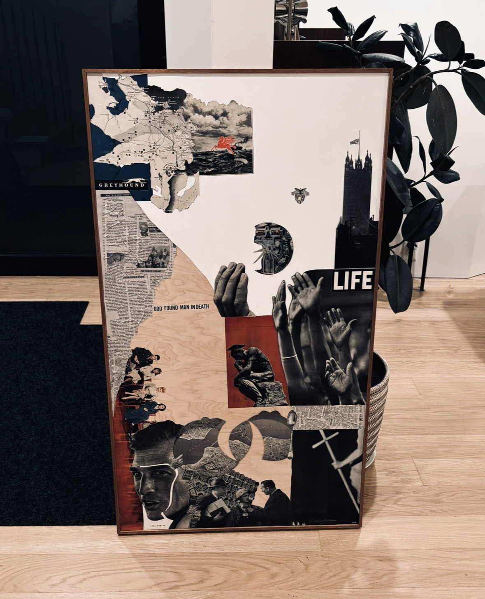
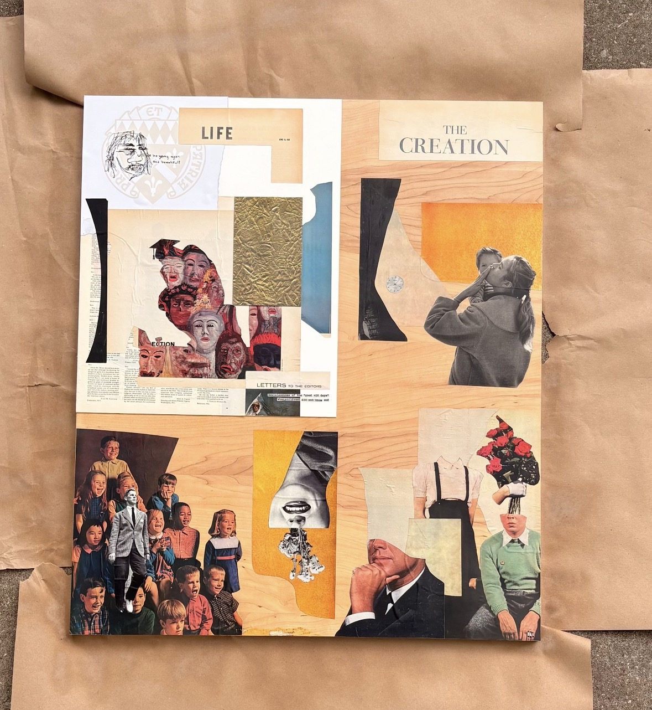

Projects
A collection of creative work, design projects, and digital experiments that reflect my interests in marketing and creativity.
01 — Art & Creative Projects

Life Like
A mixed-media exploration of bold color, contrasting scale, and negative space to create visual balance and impact.

I Am One of the Millions
A reflection on individuality and identity, created through layered magazine imagery and found materials.

Life January 31
A mixed-media composition built around found imagery, typography, and the visual language of LIFE magazine.

LIFE / Composition
An exploration of balance, scale, and visual composition using imagery from LIFE magazine.

Life The Creation
A mixed-media exploration of the stages of life and creation, reflecting on the idea of beauty over time.
02 — Video Advertising
Jesus Reigns — Social Media Video
A short-form video project created for Jesus Reigns, a clothing brand. I filmed and edited three short videos for the brand's Instagram, combining visual storytelling and creative content to showcase the brand.
My role: Filming, videography, and video editing.